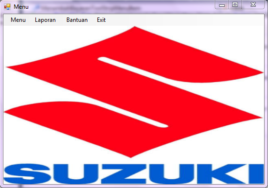

Untuk tampilan menu utama hanya admin terdaftar yang bisa mengakses Sub menu admin .
Pada tampilan menu utama terlihat seperti gambar berikut :

Pada tampilan tersebut Admin dapat melakukan tugasnya memanage dan memaintanance aplikasi koperasi simpan pinjam seperti menginput, menghapus,
mengedit data-data dari anggota koperasi dan melakukan proses transaksi simpanan dan pembayaran setiap anggota koperasi.
Menu pilihan Sistem pada toolbar digunakan untuk melakukan log-off ataupun keluar dari aplikasi, sedangkan pilihan Bantuan digunakan untuk melihat menu bantuan ini.
Pada tampilan menu utama untuk Admin hanya bisa diakses oleh pihak yang ter Otorisasi.